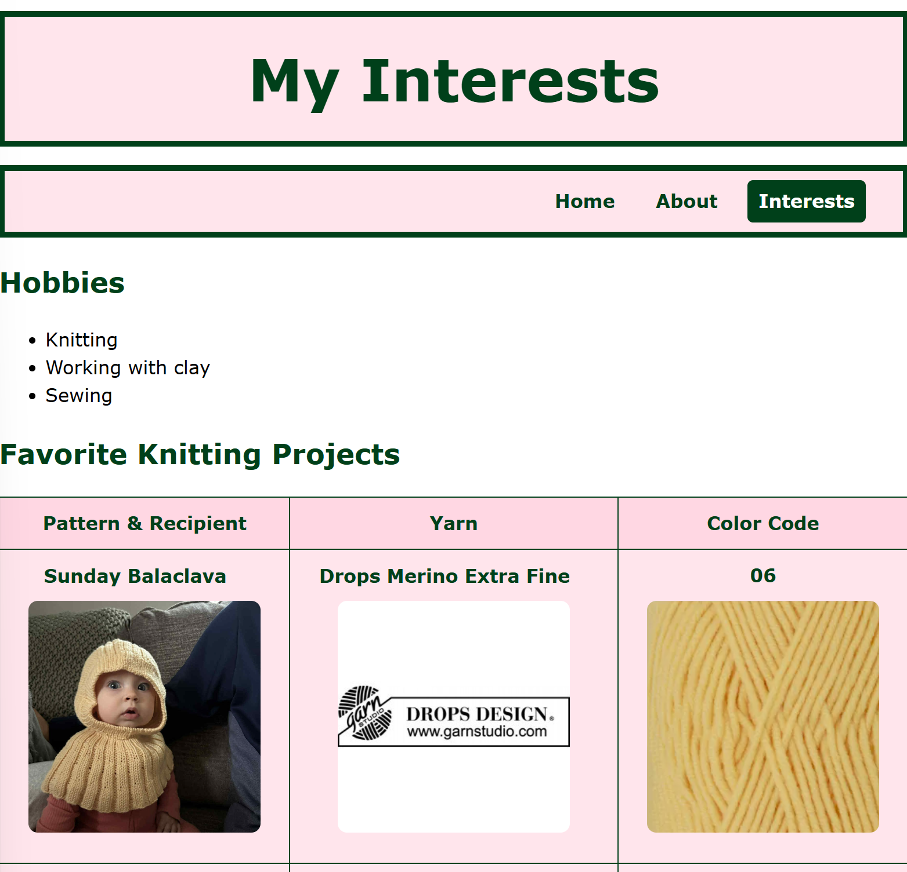
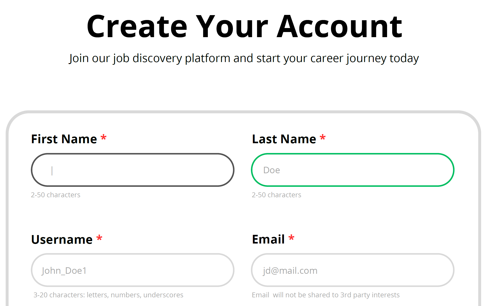
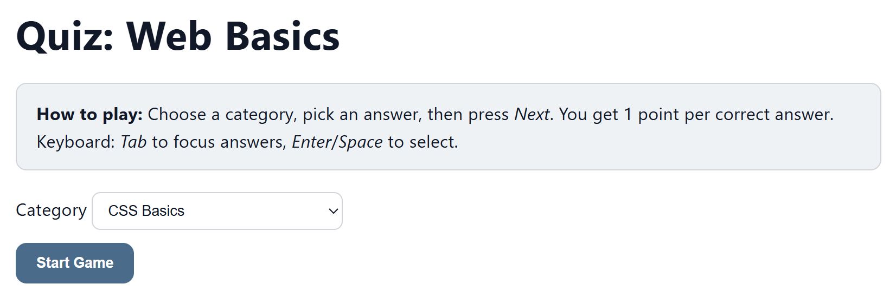
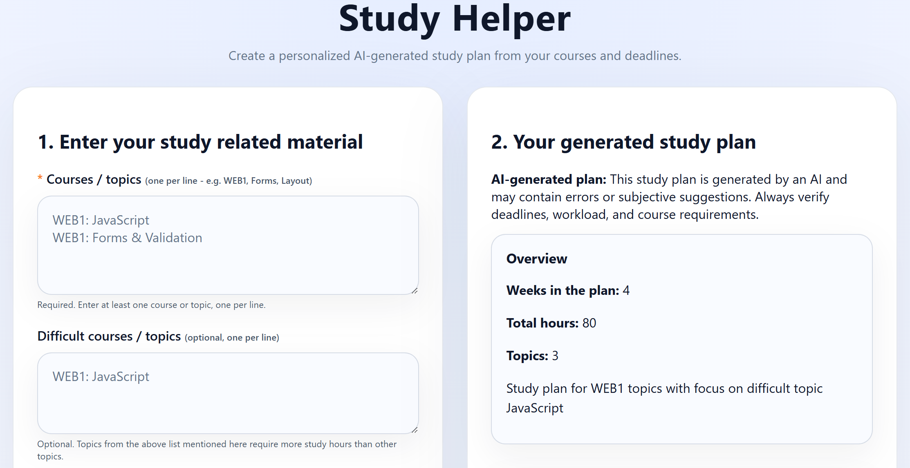

1. Project | Introduce Yourself - Personal Website

Description: A 3-page personal website created to
introduce myself. It includes a shared navigation bar across all
pages, semantic HTML structure, an “About” page explaining
background and motivation for studying at VIA, and an “Interests”
page showcasing hobbies plus a table to organize information. Each
page includes a footer with contact details and social links.
Technologies Used:
HTML
(3 separate pages; semantic elements such as
<header>, <nav>,
<main>, <section>,
<aside>, <footer>; table
for structured information; consistent footer with
contact/social links)
CSS
(shared stylesheet; CSS variables; responsive layout using CSS
Grid “Holy Grail” structure; media queries with
@media for smaller screens)
2. Project | Job Discovery - Account Creation Form

Description: A responsive, accessible “Create
Account” web form for a job discovery platform, built with
semantic HTML and clear labels/ARIA, plus client-side validation
and live feedback (e.g., 18+ age requirement and password
confirmation).
Technologies Used:
HTML
(semantic form structure; built-in form attributes;
accessibility via ARIA where needed such as aria-*)
CSS
(CSS variables; responsive layout with CSS Grid; form styling
including focus states)
Vanilla JavaScript
(DOM updates + event listeners; client-side validation such as
age check and password match; live UI feedback for inputs like
<input type="range">)
3. Project | Quiz Web Basics - Browser-Based Quiz Game

Description: A DOM-based multiple-choice quiz
game where the player selects a category, answers questions
one-by-one, and earns 1 point per correct answer. The game
includes start/quiz/end screens, keyboard-friendly answer
selection, score tracking, and a persistent highscore saved in
localStorage (plus saved category).
Technologies Used:
HTML
(structured screens/sections; form controls for category
selection; accessible labels and ARIA live updates e.g.
aria-live)
CSS
(CSS variables; responsive-friendly layout container; UI states;
small animations for question/answer appearance)
Vanilla JavaScript
(DOM rendering; event handling for click + keyboard, e.g.
keydown; game state management; scoring logic;
category-based question bank)
Web Storage API (localStorage)
(persistent highscore and saved category selection)
4. Project | Study Helper - Generative AI Study Plan Prototype

Description: A client-server web prototype that
helps students plan and prioritize studying by collecting topics,
deadlines, study period, and weekly hour limits in a browser form,
then generating a structured, AI-produced study plan (overview,
priorities, prerequisites, week-by-week schedule, risk flags). The
frontend treats the AI output as untrusted text, parses/validates
it, enforces constraints (e.g., weekly hour cap), renders it, and
can restore the latest plan via localStorage.
Technologies Used:
HTML
(semantic structure for the client UI and form-based inputs)
CSS
(responsive layout; CSS variables for consistent theming)
Vanilla JavaScript
(DOM manipulation; form validation; Fetch API via
fetch() for client-server communication; Web
Storage via localStorage)
Node.js + Express
(backend API with a single POST endpoint;
CORS-enabled)
dotenv
(environment variable management via .env for API
keys and configuration)
Groq LLM API
(OpenAI-compatible chat completions; model e.g.
llama-3.3-70b-versatile)
JSON
(data interchange format between client, server, and AI output
parsing)